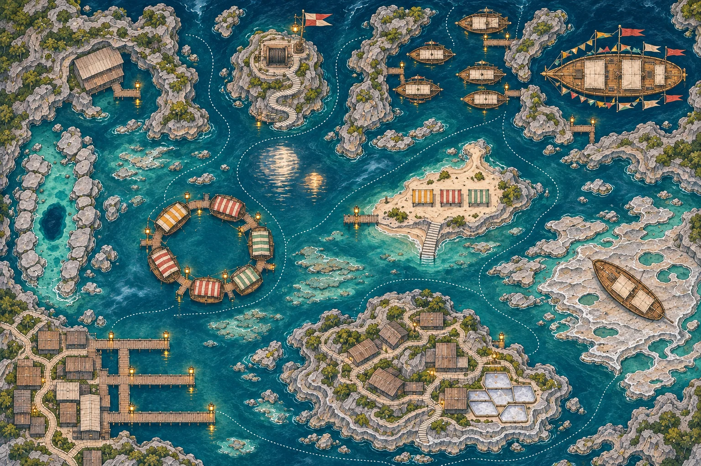
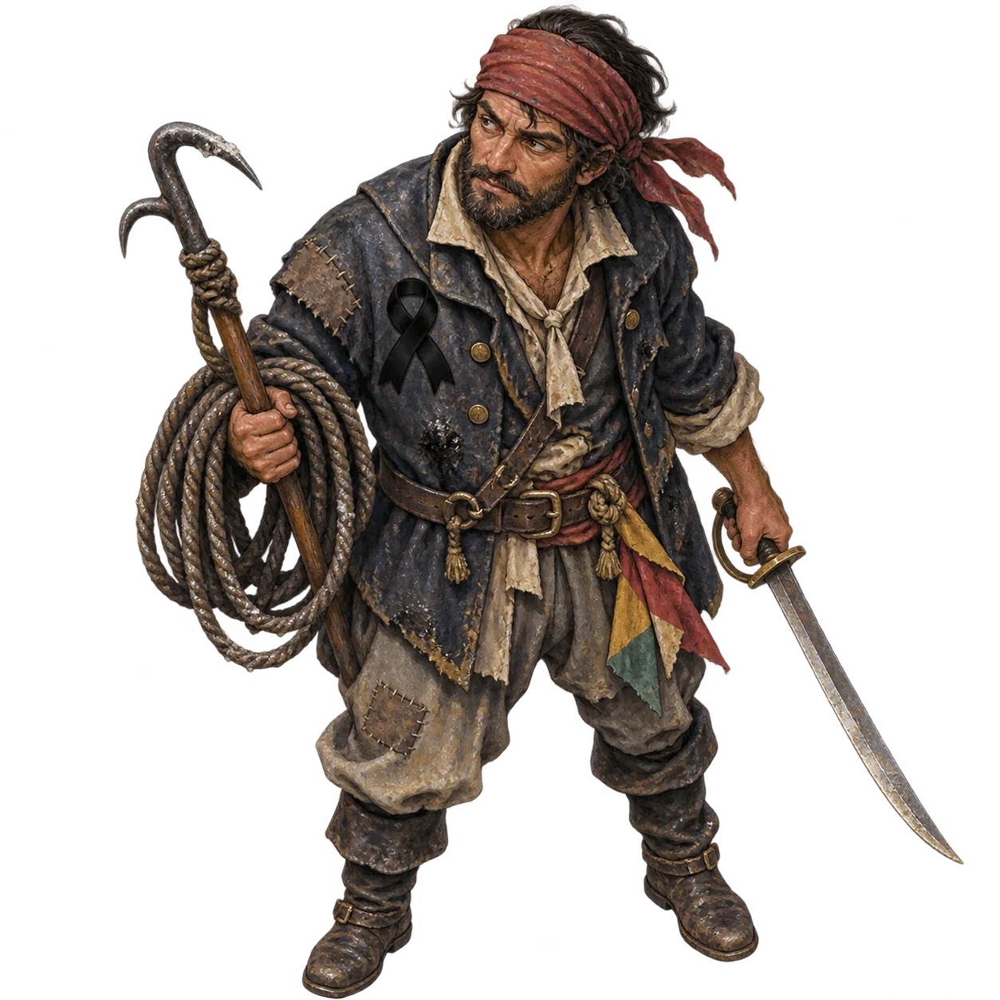
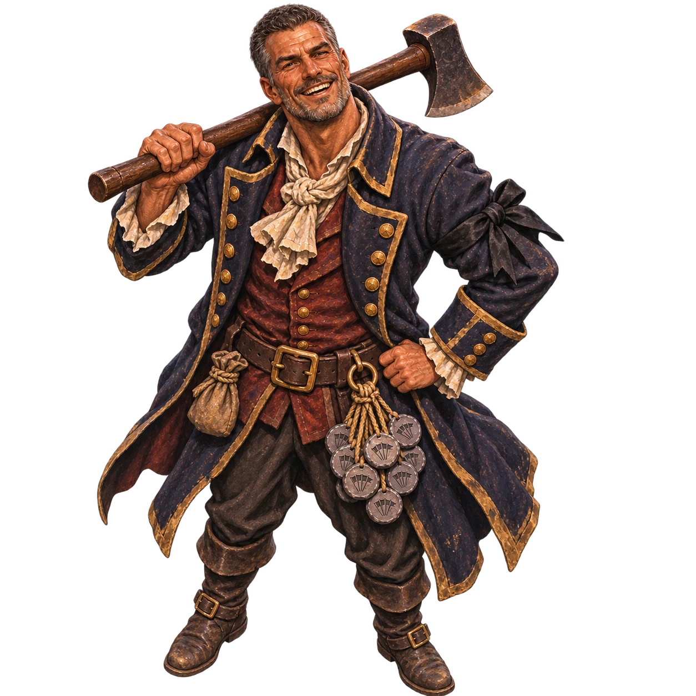

Соляной Меридиан
Карты и фигурки ведущего
Игровой комплект
5 игроков · 6 игроков · 7 игроков · 8 игроков
Карта кампании

Поля боя


Герои


Персонажи ведущего


Противники
 Часовой флотилии 2Часовой флотилии 5Часовой флотилии 3Часовой флотилии 4Часовой флотилии 1Часовой флотилии 6
Часовой флотилии 2Часовой флотилии 5Часовой флотилии 3Часовой флотилии 4Часовой флотилии 1Часовой флотилии 6 Рифовый воин 2Рифовый воин 1Рифовый воин 3Рифовый воинРифовый воин 2Рифовый воинРифовый воин 4
Рифовый воин 2Рифовый воин 1Рифовый воин 3Рифовый воинРифовый воин 2Рифовый воинРифовый воин 4

Матрос «Ласки» 1Сторож цепи 1Матрос «Ласки» 5Абордажник флагмана 3Абордажник флагмана 2Матрос «Ласки» 3Сторож цепи 2Матрос «Ласки» 4Шкипер «Ласки»Матрос «Ласки» 2Абордажник флагманаАбордажник флагмана 1 Шкипер «Ласки»
Шкипер «Ласки»

Арвид КречетАрвид Кречет